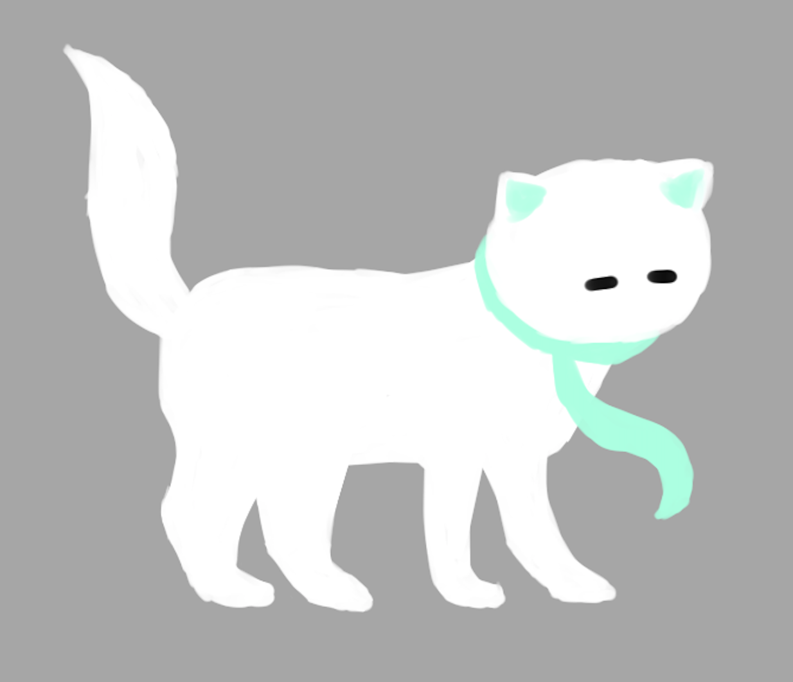
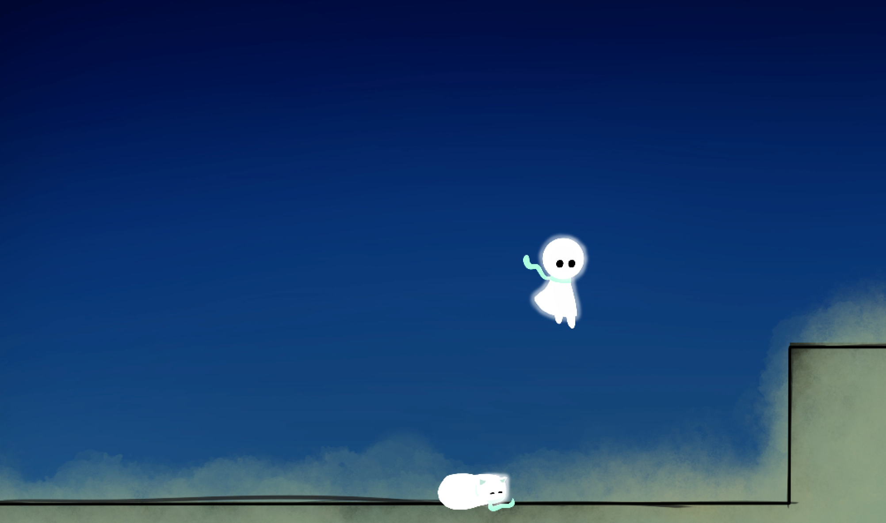

this unnamed metroidvania is deeply inspired by hollow knight. god, i love hollow knight.
it's currently unnamed, and this page will (attempt to!) document my progress in it. it's never a lot, but it's a step! (maybe!)
the cat is gonna be a big part of the game :)
i'm Not Good at drawing though. i spent so long on this i forgot how cats look like :) this is probably 100% anatomically incorrect, but hey, it's cute! kinda!
i have the movement of the player complete, and like, a big chunk of lore and potential conlangs and stuff, but it's all in my head.
